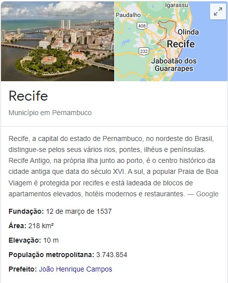
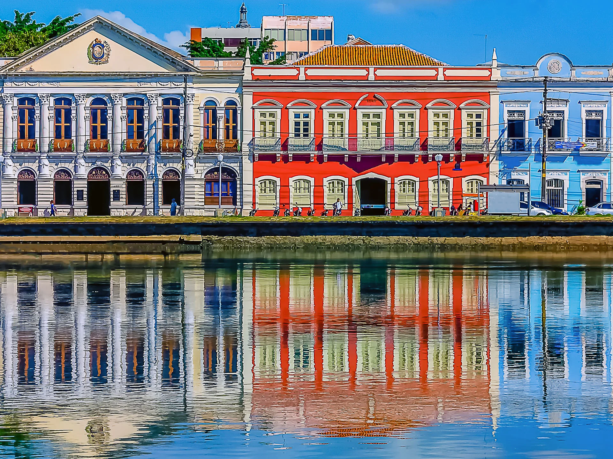

Bem Vindo a Cidade de Recife
Conheça Recife
O que fazer em Recife: Descubra os melhores passeios e excursões
A primeira viagem a Recife é sempre repleta de expectativas. Este destino encantador é famoso pela história, cultura e praias deslumbrantes. Ao planejar sua viagem, certamente surgem perguntas sobre o que fazer em Recife. Aqui vão algumas dicas de passeios incríveis.
Entre as melhores atrações de Recife, destacamos o Instituto Ricardo Brennand. Nesse museu, você pode admirar a vasta coleção de artefatos históricos e obras de arte. Em sua primeira visita, não esqueça de conferir o acervo de armaduras medievais, um dos maiores do mundo.
Para quem curte passeios ao ar livre, Recife oferece a praia de Boa Viagem, famosa por sua larga faixa de areia e águas mornas. Não se esqueça de experimentar os deliciosos petiscos servidos à beira-mar e aproveitar a vibrante vida noturna.
Outra atração imperdível é o Parque das Esculturas, localizado a poucos passos do famoso Marco Zero. Esse parque conta com diversas esculturas feitas por Francisco Brennand, um dos maiores artistas plásticos do Brasil.
Explorar o Centro Histórico de Recife é outra atividade repleta de surpresas. Nesse bairro, você encontrará monumentos significativos como a Capela Dourada e a Catedral de São Pedro dos Clérigos, além de casarões antigos com uma arquitetura que transporta os visitantes para outra época.
Nossas atrações incluem também a culinária, considerada uma das mais ricas do Brasil. Não deixe de saborear um autêntico bolo de rolo ou degustar uma peixada pernambucana.
Venha se encantar com Recife, um destino que mistura a alegria do povo nordestino, paisagens estonteantes e uma rica cultura. Agora que você já sabe o que fazer em Recife, aproveite para organizar seu roteiro e preparar-se para momentos inesquecíveis. O frevo, o maracatu, as praias e a história estão te esperando de braços abertos.
